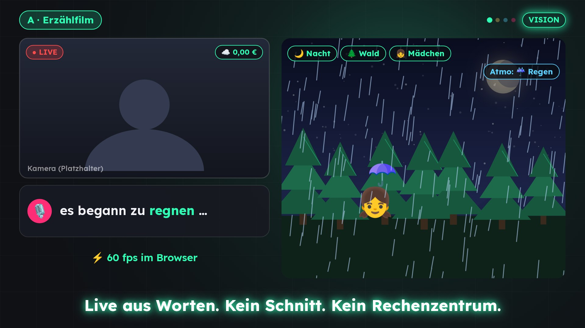

LiveFX: Live-Streams, die zuhören
Die Stimme des Creators wird in unter einer Sekunde zu Meme, Sound und animierter Szene – und morgen zum Bild für alles Gesprochene: Erzählfilm, Sprachenlernen, neue Räume, Auto-Schnitt.

▶ Investor-Show startenAlles für das Investorengespräch
Investment-Memo
These, Produkt 2.1, Vision A–D, Markt, Modell, Go-to-Market, Mittelverwendung, Runway, GuV 5 Jahre, Bewertung, Gates, Risiken, Team.
Investor-Deck (15 Folien)
PowerPoint: These, Lücke, Produkt 2.1, Vision, Markt, Modell, Roadmap, Mittelverwendung, Finanzen, Bewertung, Gates, Team.
Investor-Show (animiert)
Selbstlaufende Präsentation im Browser, DE/TR/EN umschaltbar; Pfeiltasten, Leertaste = Auto-Play.
Finanzmodell (Excel)
GuV 5 Jahre, Mittelverwendung, Liquidität 24 Monate, Gates, Bewertung, Sensitivität.
Die Show in unter 2 Minuten
LiveFX 2.1 läuft – vor jeder Finanzierung
Quelle: live-fx/business/BUSINESSPLAN.md §3, live-fx/CHANGELOG.md 2.1.0. Noch keine Umsätze.
Du redest. Es wird Bild.
250.000 € für 18 Monate
Vorschlag – mit Steuer-/Rechtsberater prüfen
Quelle: Finanzmodell LiveFX_Finanzmodell.xlsx, Blatt Mittelverwendung. Runway 18 Monate auch ohne Umsatz; Folgerunde ≈ 350.000 € bis Monat 18.
Bewertung: Angebot der Gründer
2,25 Mio. € Pre-Money · 2,5 Mio. € Post-Money · 10 % für Investor:innen – unter allen vier Referenzmethoden (2,35–3,0 Mio. €). Alternative: SAFE mit Cap 2,25 Mio. €, 20 % Discount.
Verhandlungsrahmen; mit Steuer-/Rechtsberater prüfen.
Skalieren erst, wenn die Evidenz das Gate passiert
Unterlagen aus live-fx/business
Markt, Vision, Quellen
Marktanalyse, Vision-Dokument und nummerierte Quellenliste.
Die Menschen hinter LiveFX
Tuncay Sancak
GRÜNDER & ERFINDER · GESCHÄFTSFÜHRER
Hat LiveFX erfunden und bis Version 2.1 gebaut – vor jeder Finanzierung. Ehemaliger Projektleiter, KI-Experte und Data Scientist bei Mercedes-Benz; Deutsch und Türkisch als Muttersprachen. Autor von Kinderbüchern, u. a. „Gut, dass es dich gibt“.
Gönül Demet
INVESTOR RELATIONS & FUNDRAISING
Leitet die Investorenansprache für die Pre-Seed-Runde und hat diese Unterlagen erstellt. Kontakt: [E-Mail]